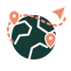
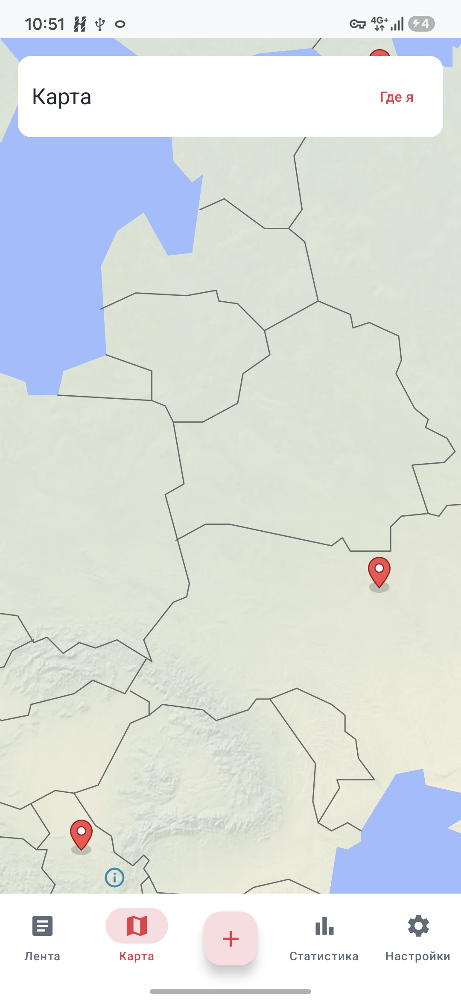
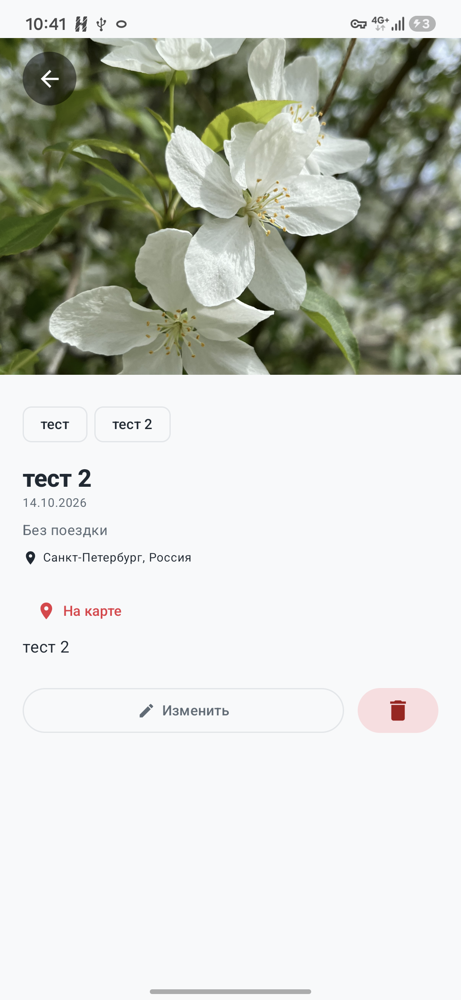

Поймайте момент
Добавьте фотографии, пару строк и теги. Всё, что поможет вспомнить не только место, но и ощущения.

TravelLog. СкачатьЛичный дневник путешествий · Android
Тот самый вид. Случайное кафе. День, который хочется прожить ещё раз. Соберите всё это в своём TravelLog.
Бесплатно · Без регистрации · Android 8.0+


01 / ВАША КОЛЛЕКЦИЯ ВПЕЧАТЛЕНИЙ
Неважно, уехали вы на другой край света или свернули на новую улицу. Впечатления заслуживают своего места.
Добавьте фотографии, пару строк и теги. Всё, что поможет вспомнить не только место, но и ощущения.
Укажите место вручную или определите геопозицию. Откройте карту и вернитесь к записи прямо из отметки.
Объедините записи по датам путешествия. А для прогулки одного дня просто оставьте запись без поездки.
02 / ЗНАКОМЬТЕСЬ, TRAVELLOG
От первой заметки до карты воспоминаний.
Нажмите на экран, чтобы рассмотреть его ближе.
Фотографии, заметки и быстрый поиск по воспоминаниям.
Все записи с координатами — на одной карте.
Записи по месяцам, любимые теги и сохранённые места.
Светлая, тёмная и готовые цветовые схемы. Ваш профиль.
Реальные экраны приложения с тестовыми записями.
03 / ВОСПОМИНАНИЯ ПОД РУКОЙ
Дневник хранится на устройстве. Сохранённые записи можно читать и редактировать без интернета.
Экспортируйте дневник с фотографиями в ZIP. Резервная копия поможет перенести его на другой телефон.
Без создания аккаунта. Установите приложение — и сохраните то, что хочется запомнить.
СЛЕДУЮЩАЯ ИСТОРИЯ НАЧИНАЕТСЯ ЗДЕСЬ
Пусть в телефоне останутся не только фотографии,
но и всё, что за ними стоит.
Версия 1.0.1 · APK, 57,6 МБ · Android 8.0+
Страница релиза на GitHubПЕРЕД ПУТЕШЕСТВИЕМ
Скачайте APK на Android и откройте файл. Если система запросит разрешение на установку из этого источника, разрешите её для выбранного браузера или файлового менеджера. После установки приложение появится в списке приложений.
Для загрузки карты и поиска названия места или адреса. Создавать записи, добавлять фотографии и просматривать дневник можно без подключения.
Локально на вашем устройстве. Чтобы не потерять дневник при смене телефона или удалении приложения, сохраните ZIP-копию через настройки и перенесите её в надёжное место.
Да. Экспортируйте ZIP в настройках, перенесите архив и импортируйте его в TravelLog на другом устройстве. Импорт заменяет текущий дневник, поэтому предварительно сохраните его, если в нём уже есть нужные записи.